Cayeux 2008

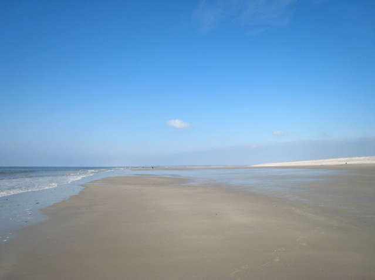
Cayeux, encore une immense plage de sable... à marée basse... Des médisants disent que Cayeux vient de Cailloux, mais en fait, il y en a juste une petite bande en haut de la plage. C'est normal, une usine en retire par camions entiers pour les broyer et faire du kaolin...

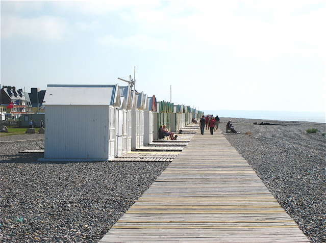
Sur la petite bande de cailloux : des Planches, comme à Deauville, et des cabines bien alignées, une promenade agréable et ensoleillée...

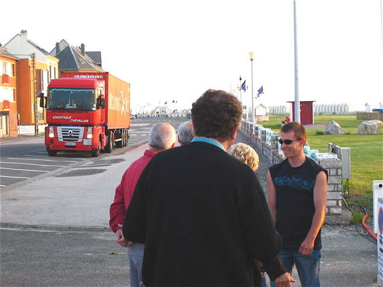
Vendredi soir, je fais un petit pot pour mon anniversaire. Il durera 3 bonnes heures, se prolongeant à mesure des arrivées ! Jérémy passe avec son camion rouge, non, pas un jouet, un vrai, un gros ! Mais il reviendra avec sa 'tite auto demain...

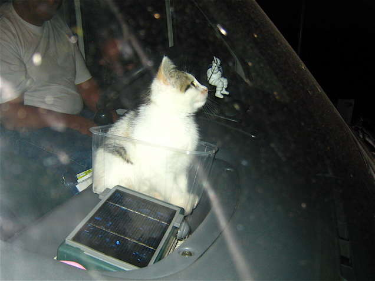
Les Ghesquière nous présentent Wendy qui trône dans son tupperware sur le tableau de bord...

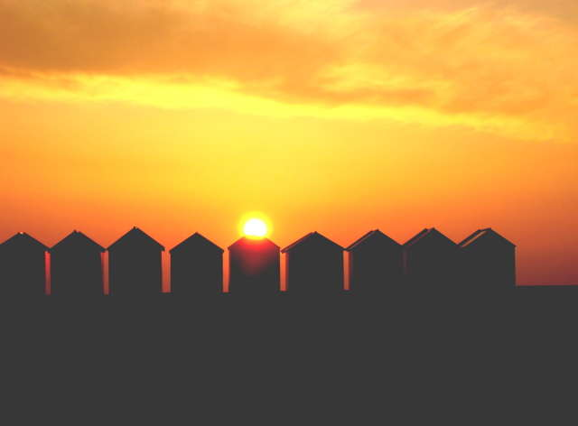
Après une petite initiation au golf par Michel le Pirate, le soleil se couche sur les cabines, on va se coucher aussi, sans manger mais bourrés de cacahuètes, tranches de gâteau breton et autres...

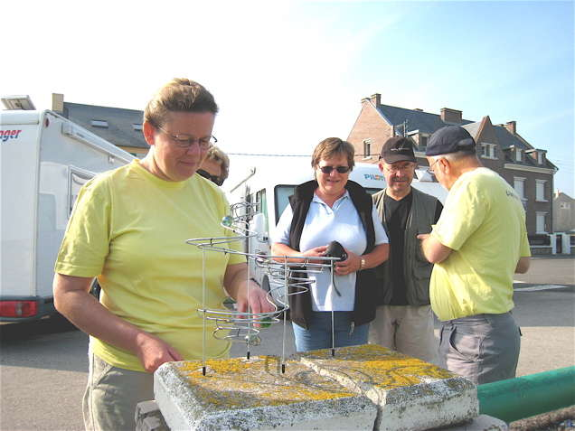
Samedi matin, à part ses moulinets à balles de golf, Joël a créé de petits jeux de billes manuels, à base de fil de fer courbé formant des chemins comme un Grand Huit !

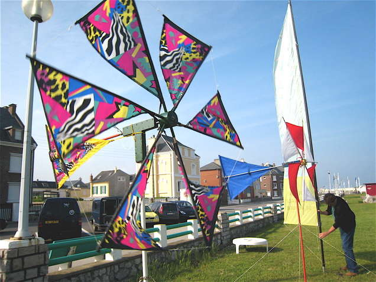
Michel a amené sur son scooter depuis Paris ces moulinets très colorés !

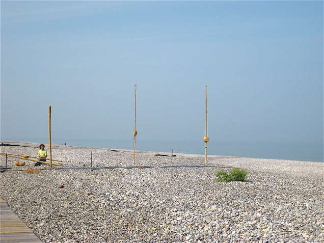
Didier monte sur la plage, au point le plus haut, ses instruments éoliens qu'on entendra rapidement, le vent venant de la mer !

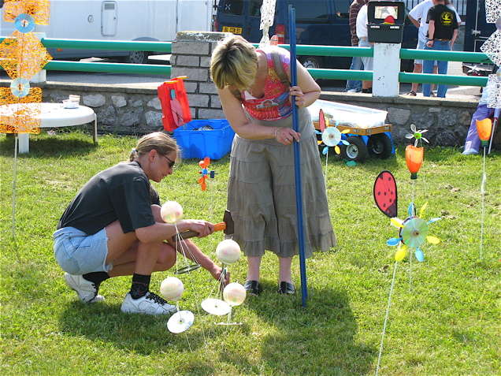
Dans les JdVs, les femmes s'entraident, Corinne donne un coup de main (et de marteau !) à Patricia pour planter son atomium...

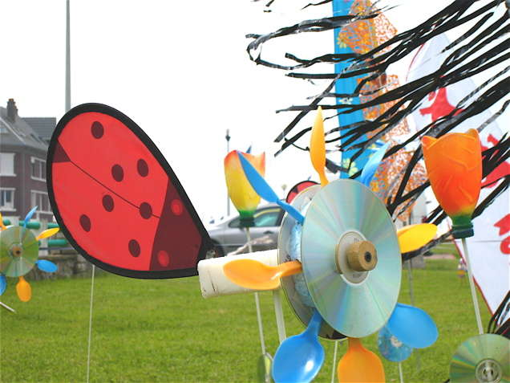
Les moulins de Patricia joignent l'utile à l'agréable, les cuillers ont une forme aérodynamique très efficace...

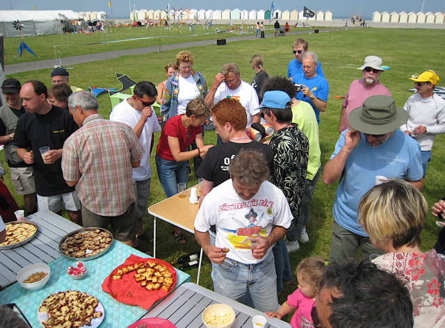
Mon anniversaire était aujourd'hui, mais j'ai fait le pot hier. Hier, c'était l'anniversaire de Joël, mais il fait son pot aujourd'hui !...

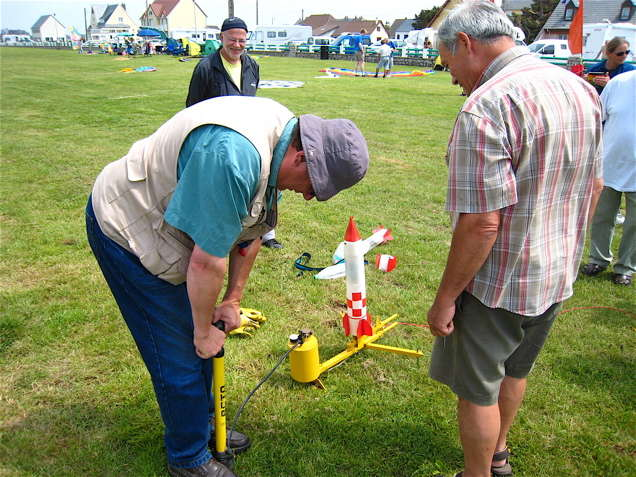
Il a construit des fusées ultra-légères, et le lanceur ultra-lourd qui va avec. Il faut gonfler fort au départ. Patricia monte à 0,2 kg/cm2, moi à 3, Joël à 5, seul François arrive à 8 ! Mais la chronologie du vol fonctionne mal : le pétard sensé ouvrir le parachute explose trop tôt, ou trop tard, ou pas du tout !

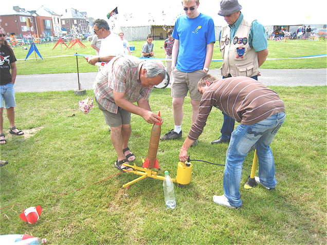
Joël apporte une fusée plus sérieuse apparemment, en bronze... En fait c'est du plastique bronzé, et le résultat est voisin !

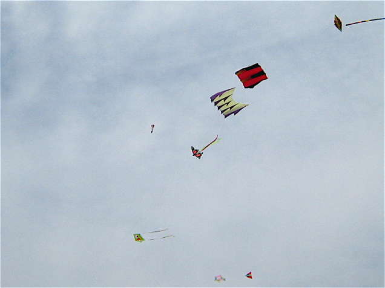
Les fusées montent bien, en général, mais retombent verticalement à grande vitesse faisant un cratère d'environ 8 cm de profondeur malgré leur légèreté...

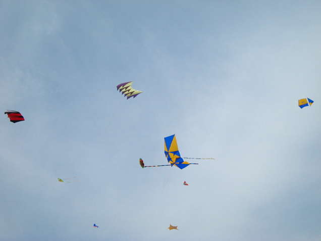
Les cerfs-volants s'envolent toujours plus nombreux, malgré un vent plutôt limité, mais bien orienté et régulier !

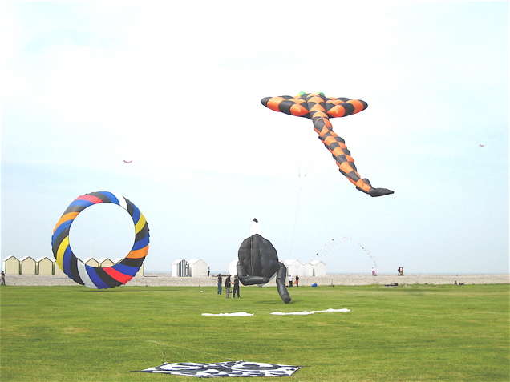
Sylvain a apporté sa grande raie, et Jean-François arrive à peu près à faire voler sa tête d'indien, pendant qu'un très gros bol tourne sans problème !

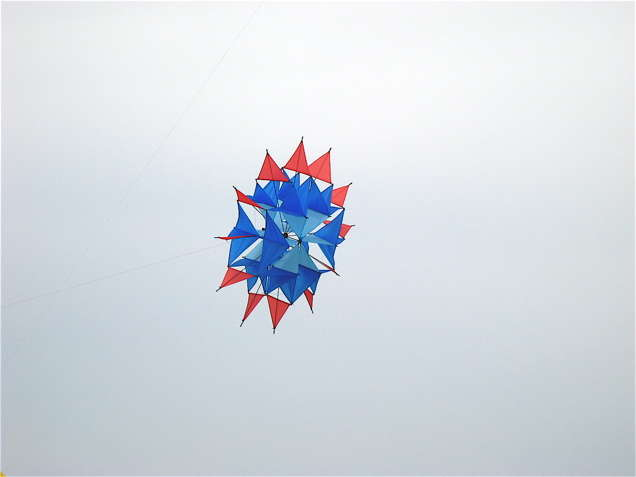
Joël a réalisé un flocon complexe, hérissé de beaucoup de surfaces portantes qui vole facilement malgré les nombreuses barres...

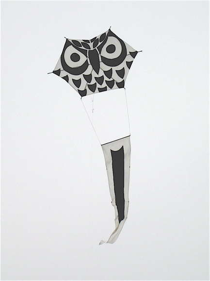
Jean-François Lorente (l'organisateur de Trouville qui n'a pas vraiment eu le temps de voler là-bas...) monte aussi son hibou de 4 m à ses couleurs : Noir et Blanc comme toutes ses réalisations !

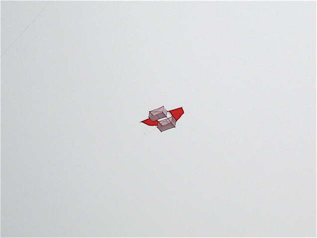
Michel Haquette (l'Ancien !) a créé ce cerf-volant très stable, avec 2 boîtes Hargrave (sans cloison médiane) et une aile style Meteo ! Il doit bien supporter le vent fort...

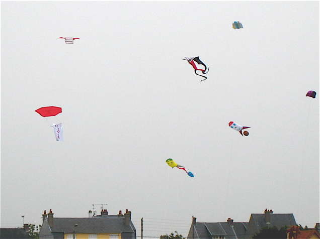
Il a aussi destocké un V13 rouge, ça fait plaisir, ça fait longtemps que nous n'en avions pas vu, à part celui de Georges Rivals que François a fait voler (peu de temps...) à Somain...

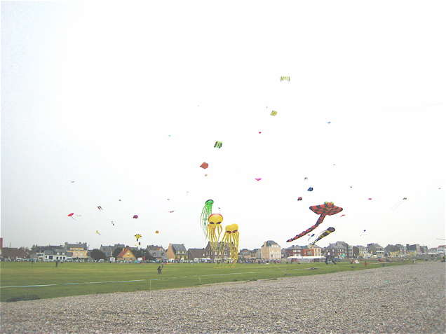
Enfin, vu de la plage (enfin, je veux dire du cordon de galets...), il y a du monde en l'air dans une petite brise de mer bien régulière mais légère !

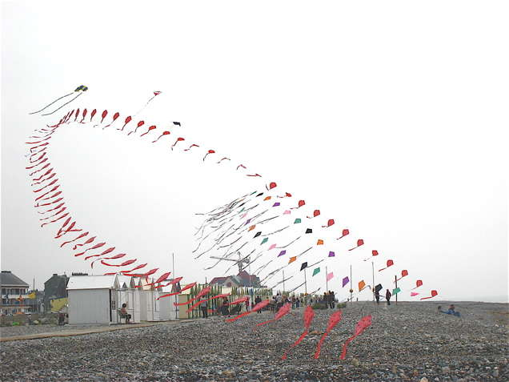
A la suite de celle de François, d'autres arches sont venues s'installer au point haut !

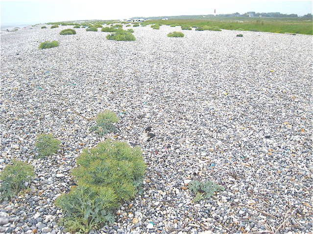
Sur le cordon, sans terre, sans sable, sans rien, les choux de sable (!) ont le courage de pousser et de se multiplier...

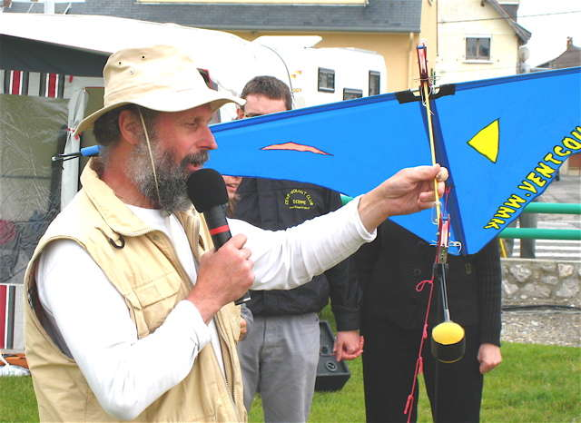
Bruno, micro en main, a fait le commentaire toute la journée, et explique le fonctionnement de sa navette championne de productivité (3 kg de bonbons en 15 mn...) !

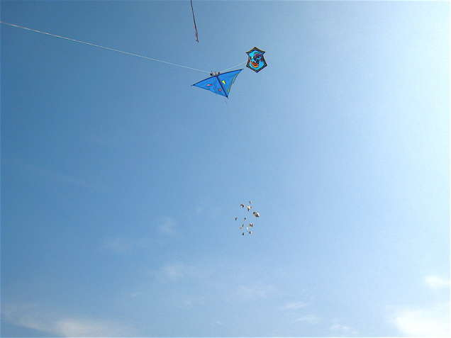
La navette monte les liasses de bonbons et les largue là-haut...

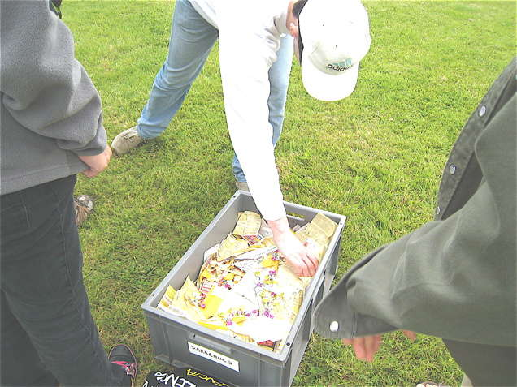
Les bonbons sont agrafés sur un papier (les Pages Blanches et les Pages Jaunes font très bien pour pas cher) pour ralentir la chute...

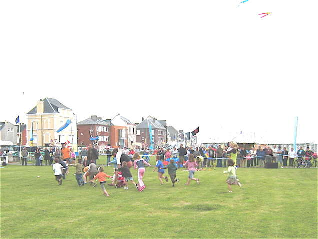
Oui, je crois que les enfants ont bien compris le mécanisme !

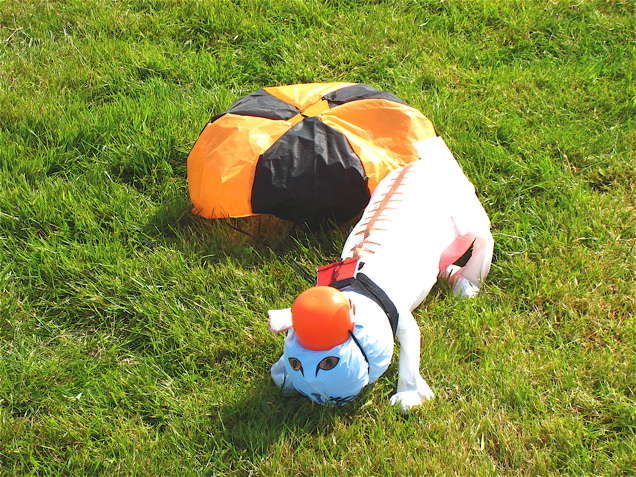
Les enfants peuvent aussi obtenir le diplôme de parachutiste pour leur doudou... Le Chat-ffarin (le ministre lui ayant serré la patte...) d'Emmanuel a bien supporté le vol et l'atterrissage, avec son parachute et son casque !

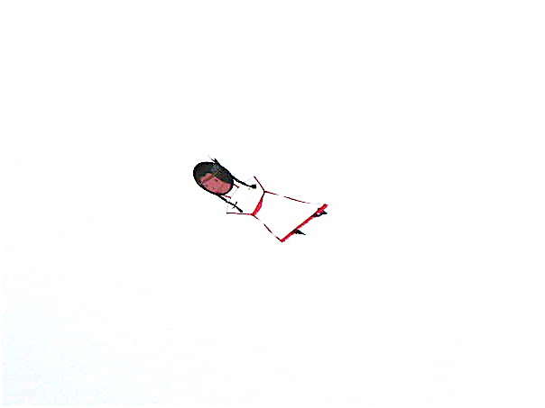
Chantal fait voler avec bonheur sa petite squaw stylisée. Elle possède plusieurs robes, choisies en fonction de la météo !

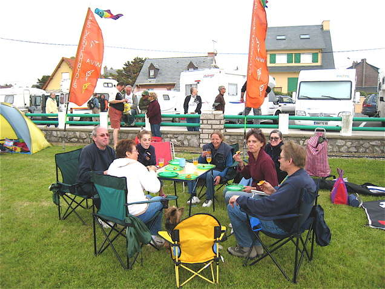
Samedi, déjeuners individuels. Ces dames et messieurs et chienchien terminent le dessert, avec un petit coup de cidre ?

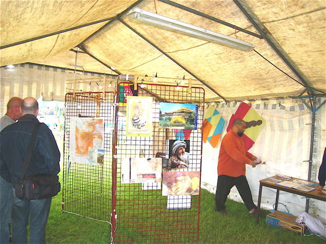
Les CarnetdeVol ont organisé pour nous une expo sur l'Afghanistan. Ils sont allés demander des matériaux à l'Ambassade à Paris et on leur a décroché des photos au long des couloirs à mesure de leur visite !

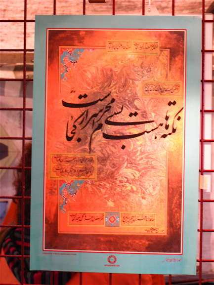
Une belle affiche afghane aux coloris vibrants, dont je ne connais pas le sujet !

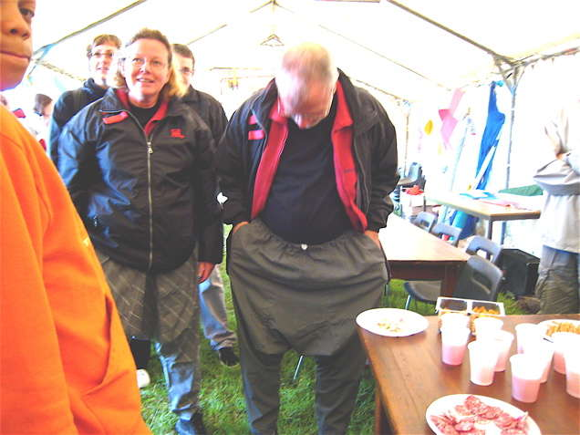
Patricia et Patrick ont même adopté momentanément le sarouel, le pantalon afghan qui laisse une grande liberté, mais offre beaucoup trop de prise pour travailler dans le vent !

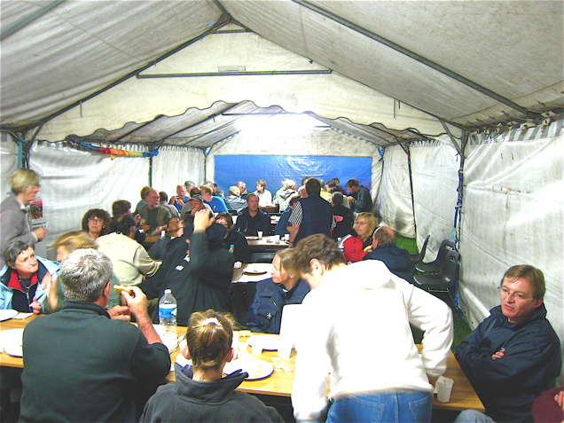
Fin d'après-midi, pluie, le vent diminue, les vols aussi. Je m'obstine un peu mais je finis par descendre le Goéland et l'Albatros, ils sécheront demain, comme la tente ! Grand dîner sous le barnum encore étanche malgré son âge et pas de vol après comme d'autres années...

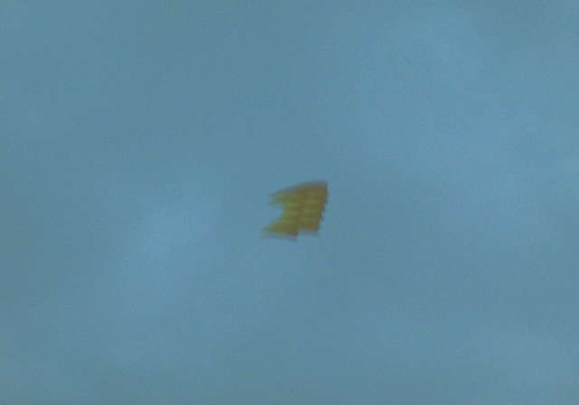
Seul reste en l'air le flow-form de Beauce, il passera la nuit dehors, mais on le trouvera par terre au matin...

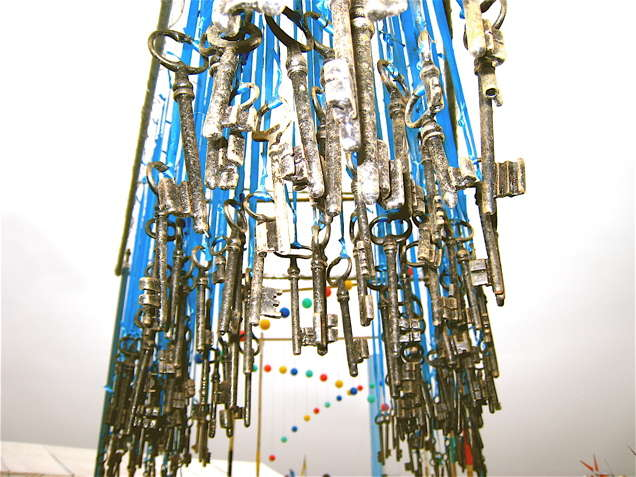
Dimanche matin, Annick a remonté tôt ses balles et ses clés !

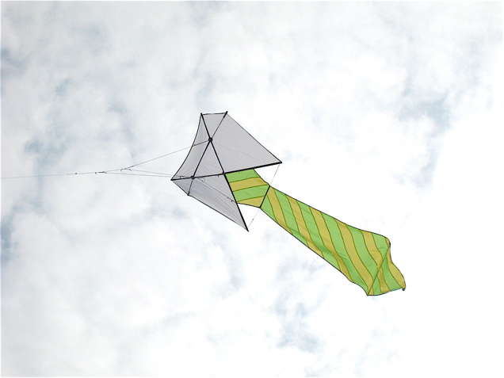
Le vent de terre tient jusqu'à 11h, puis la brise de mer prendra le dessus pour la journée, avec même une bonne force l'après-midi ! Quelqu'un fait voler son col-cravate...

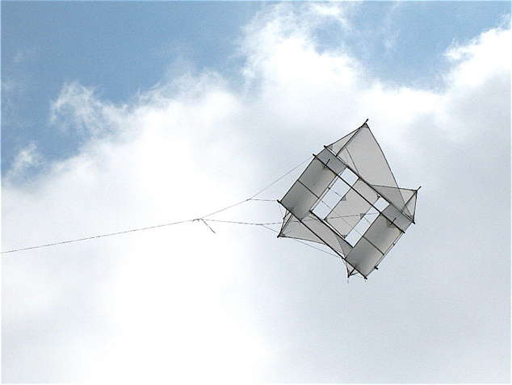
Dans les classiques, Michel a sorti encore un nouveau, un dérivé de Gomez, bien tendu, beau et bon volateur !

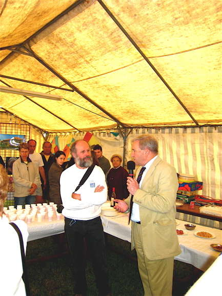
Déjeuner, après l'intro de Bruno, Monsieur le Maire nous assure de son soutien continu au festival, bonne nouvelle !

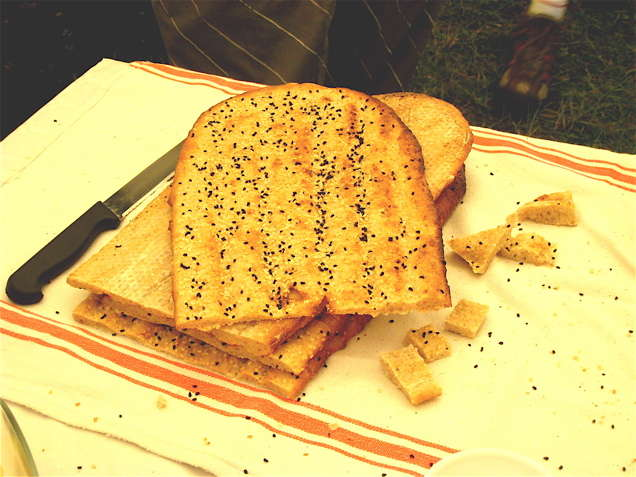
Le pain afghan ? Dur à trouver ! C'est un pain peu levé, parsemé de graines noires pas très parfumées... Pas mauvais, mais je suis un inconditionnel de la baguette qui croustille...

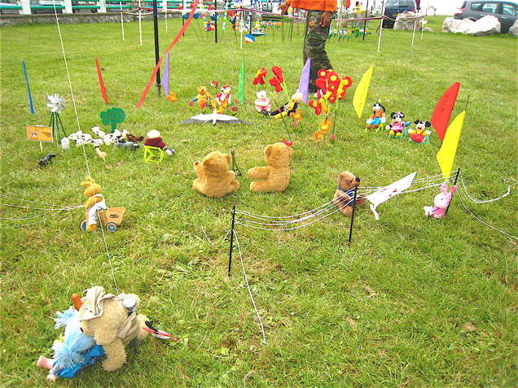
Thierry complète constamment son JdV : il y a maintenant Claude avec son CV dans les fils électriques, mon Albatros à terre et moi dans mon fauteuil, un Pirate au lapin avec sa voile, etc !

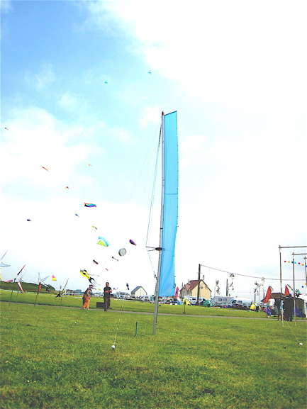
Patrick a créé un mât musical avec un espar de dériveur armé de cordes vibrantes, bolducs, gomgom, et infatigable bannière à grelots !

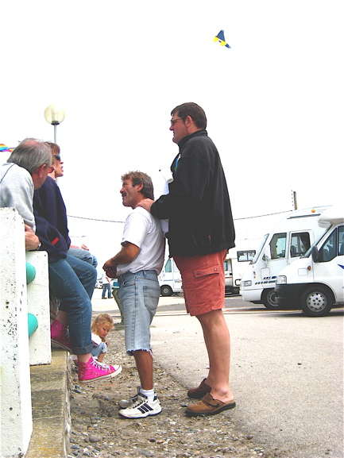
Thierry a formé une petite mêlée avec Michel le Pirate !

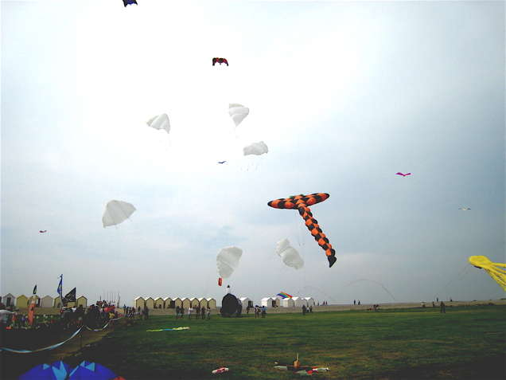
Devant la raie de Sylvain, les Pirates et sympathisants montrent leur savoir-faire en Nasas blanches, en hommage à leur (et notre) copain Christian !

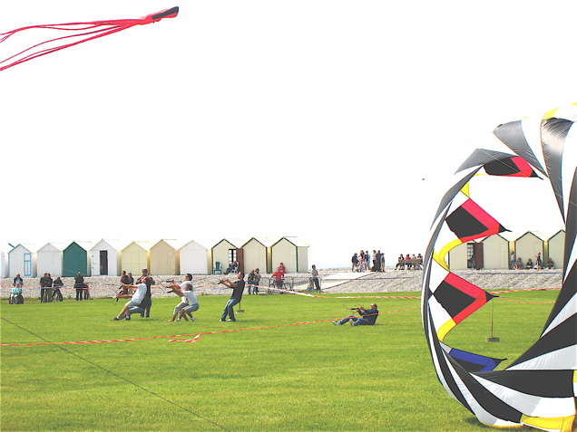
Ils ont du mérite car le vent monte petit à petit, et il faut cramponner ! Ils finiront tous assis par terre, les talons dans un trou...

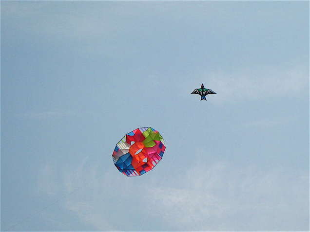
Joël a sorti un beau Circorigide comme les appelait André Cassagnes, de construction originale.

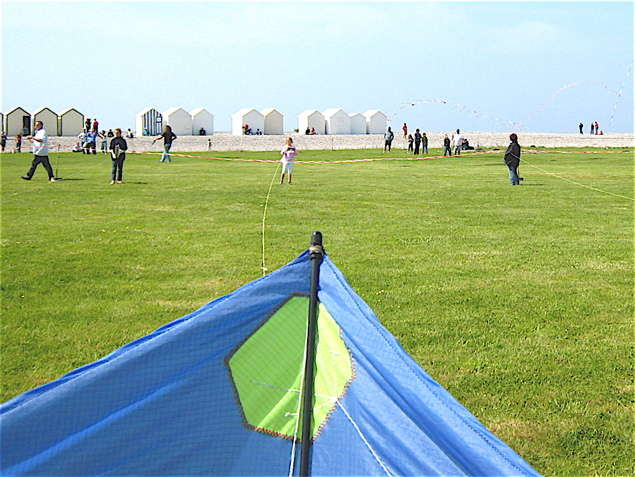
Combat de Rokkaku féminin d'abord. Je prête le mien à une charmante et très jeune spectatrice !

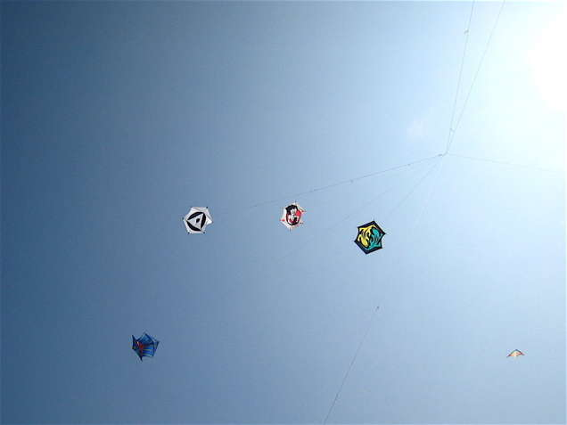
En un rien de temps, un beau noeud. J'ai réglé mon rokka pour qu'il ne tire pas trop, mais du coup il n'en fait qu'à sa tête... Finalement, la demoiselle gagnera (pas comme moi plus tard...), dernière à toucher terre d'un groupe de 4 mélangés ensemble !

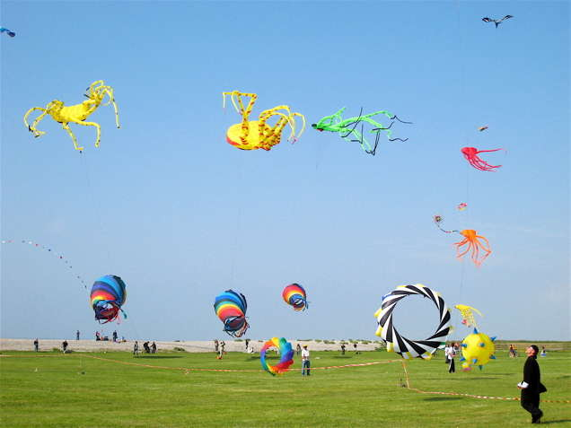
Il y aura bien sûr aussi des pieuvres sous porteurs, et des manches à air géantes et tournantes...

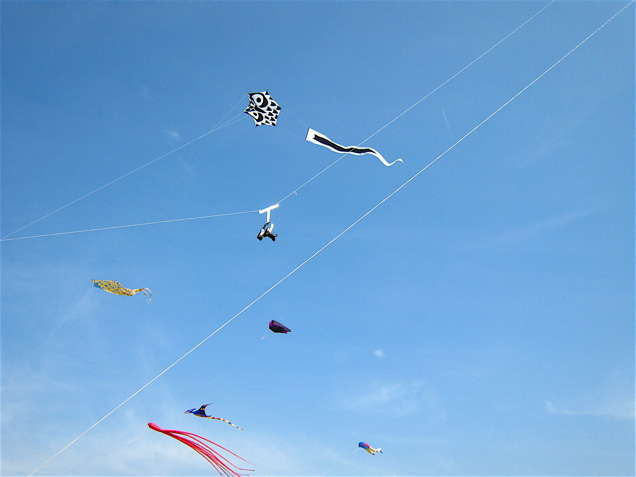
Un photographe au matériel sérieux a requis l'aide de notre Flow-form de 16 m2 pour soulever son kg d'appareil photo, apparemment sans orientations en vol !

Michel Haquette a encore sorti une création : une aile de réacteur avec une boîte Conyne ! Efficace en tout cas !

Après un vol très agréable en paire liée par un ruban, Chantal et Jean-Claude nous ont séduits avec leurs trains de petits deltas à longues queues !

Bon, l'heure avance, il faut songer à ranger ! Heureusement, les Jardiniers du Vent ont en général de gros véhicules, mais il faut quand même démonter, transporter, enfourner, amarrer, on ne dira jamais assez leurs efforts pour le bien public !

Pour mes efforts, j'ai gagné un tablier de jardinier ! Jardinier du Vent honoraire ?... Peut-être essaie-t-on de me pousser !

En démontant une tente, un crapaud est sorti ! Il plaît beaucoup à cette petite fille qui le caresse sans préjugés et le trouve tout doux...

Au soir, je vais dormir à la Pointe de Hourdel, avec vue sur la Baie de Somme. Le phare est moins dérangeant que les voitures qui passent sur la promenade de Cayeux... La mer est presque haute, pas de bancs de sable en vue, seulement Le Crotoy sur la rive nord...

Au matin, brume, plus de Crotoy ! Marée montante, un micro-chalutier rentre en louvoyant dès que le chenal s'élargit lentement entre les bancs...

Puis je prends la grand-route, enfin, d'abord les petites !
Cayeux : Une belle surface enherbée, pas trop de gros, du vent de mer, un accueil familial et sympathique, que demander de plus ! Pourvu que le maire tienne ses promesses, mais que le festival garde sa simplicité !
Visiteurs :